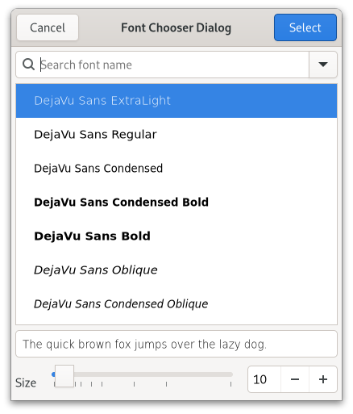

Gtk.FontChooserDialog¶
Example¶

- Subclasses:
None
Methods¶
- Inherited:
Gtk.Dialog (11), Gtk.Window (64), Gtk.Widget (183), GObject.Object (37), Gtk.Accessible (18), Gtk.Buildable (1), Gtk.Native (6), Gtk.Root (3), Gtk.FontChooser (19)
- Structs:
class |
|
Virtual Methods¶
Properties¶
Signals¶
Fields¶
Class Details¶
- class Gtk.FontChooserDialog(*args, **kwargs)¶
- Bases:
- Abstract:
No
The
GtkFontChooserDialogwidget is a dialog for selecting a font.<picture> <source srcset=”fontchooser-dark.png” media=”(prefers-color-scheme: dark)”> <img alt=”An example
Gtk.FontChooserDialog" src=”fontchooser.png”> </picture>GtkFontChooserDialogimplements the [iface`Gtk`.FontChooser] interface and does not provide much API of its own.To create a
GtkFontChooserDialog, use [ctor`Gtk`.FontChooserDialog.new].The
GtkFontChooserDialogimplementation of theGtkBuildableinterface exposes the buttons with the names “select_button” and “cancel_button”.- CSS nodes
GtkFontChooserDialoghas a single CSS node with the namewindowand style class.fontchooser.Deprecated since version 4.10: Use [class`Gtk`.FontDialog] instead
- classmethod new(title, parent)[source]¶
- Parameters:
parent (
Gtk.WindoworNone) – Transient parent of the dialog
- Returns:
a new
GtkFontChooserDialog- Return type:
Creates a new
GtkFontChooserDialog.Deprecated since version 4.10: Use [class`Gtk`.FontDialog] instead